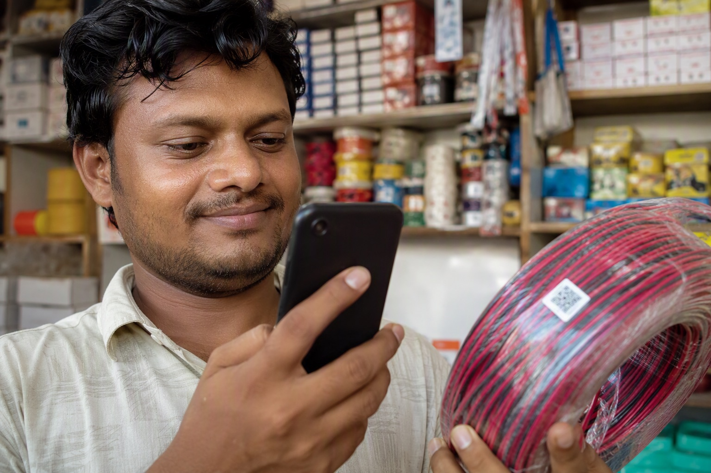

Read this page in:ಕನ್ನಡ தமிழ் తెలుగు हिन्दी
Genuine Finolex wire is sold in a sealed carton carrying two QR codes, an outer code on the label and an inner code inside the box. Both must verify on Finolex's own system (check.finolex.com). In Bangalore, Mount Cable India, an authorised Finolex distributor with over 35 years in the trade, sells only genuine Finolex wires and lets you scan every coil at your own site before you accept it.

Five checks for genuine Finolex wire
- Outer QR code on the carton label verifies as genuine.
- Inner QR code inside the box verifies as genuine.
- Seal and print. The carton is sealed, the printing is sharp, and the size, grade, coil length and batch are on the label.
- Marking on the wire. The insulation carries clear, repeated printing along its length. What the markings should say.
- Price and bill. The price is in line with other authorised sellers and you get a GST invoice naming the range and size.
The longer version is the 12-point checklist.
The two QR codes, and why one is not enough
Every Finolex carton carries two QR codes. The outer code is printed on the carton label and confirms the carton is registered with Finolex. The inner code is inside the box, reachable only after opening it, and confirms the contents are what Finolex packed. Scan both: a genuine carton can be emptied and refilled, in which case the outer code still verifies and only the inner code fails.
Scan with the free Finolex wire scanner on this site or on Finolex's own portal, check.finolex.com. For a doubt Finolex customer care is 1800-209-0166.
If a coil fails the check
Do not install it. Keep the carton, the bill and photographs of both codes, go back to the seller, and report it to Finolex customer care on 1800-209-0166. The steps are in what to do if you bought duplicate Finolex wire.
Where to buy genuine Finolex wires in Bangalore
Send your wiring list on WhatsApp to +91 88676 76700 and an itemised quote comes back within 60 minutes. Delivery is free across Bangalore by the next day (often the same day), you pay after the material reaches your site, and you can scan the QR codes on every coil at your own site before accepting it.
Showrooms: 10/3, Sri Complex, BVK Iyengar Road (Chickpete), near Rama Temple, Bengaluru 560053, and Jayanagar, Bengaluru 560011. Monday to Saturday, 10 am to 8 pm.